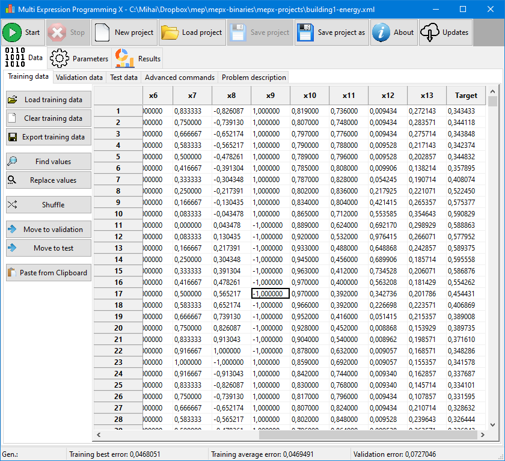
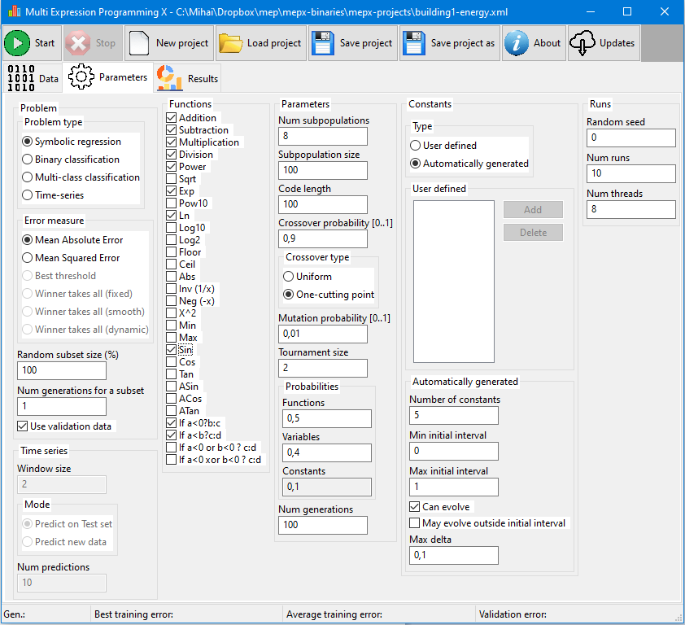
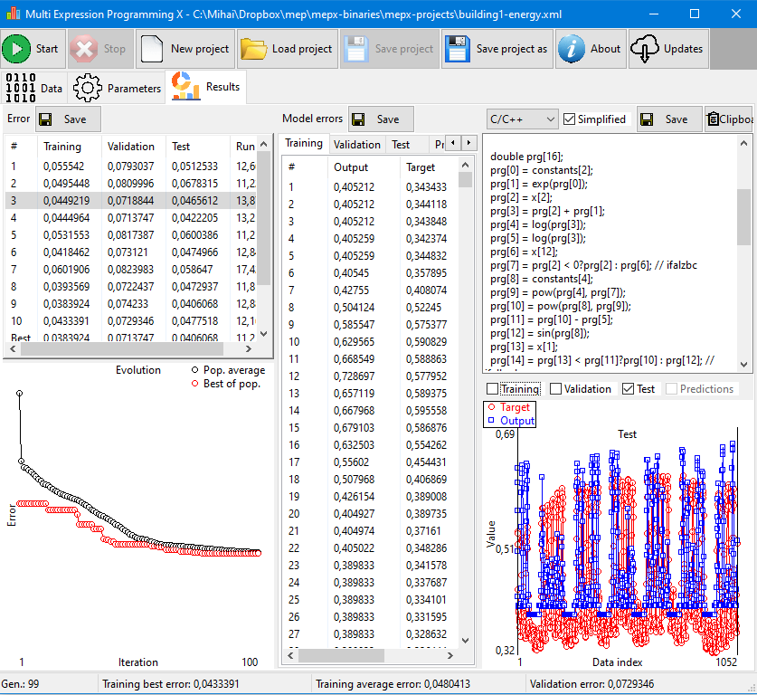
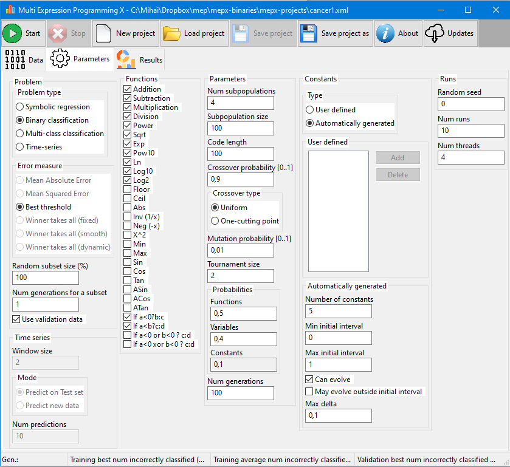
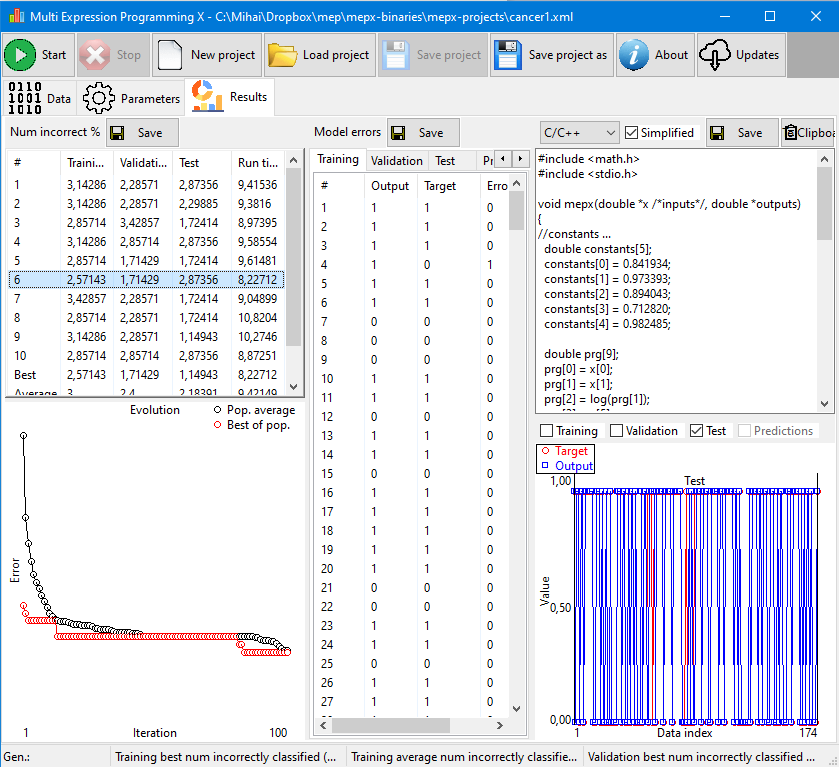
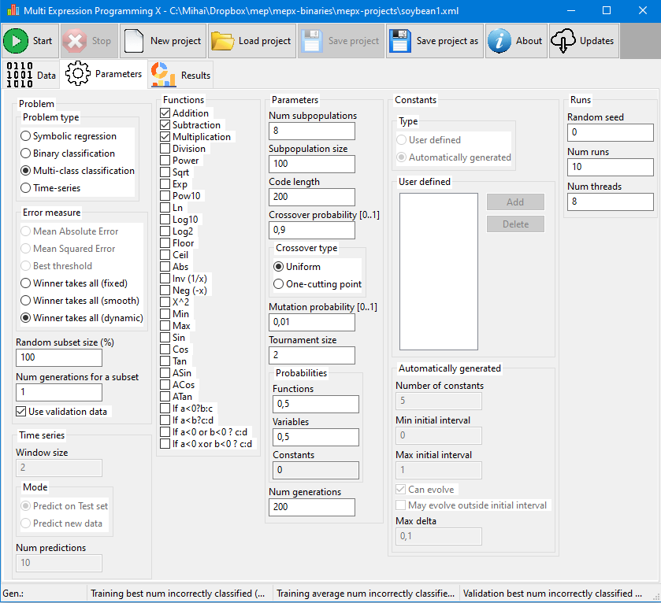
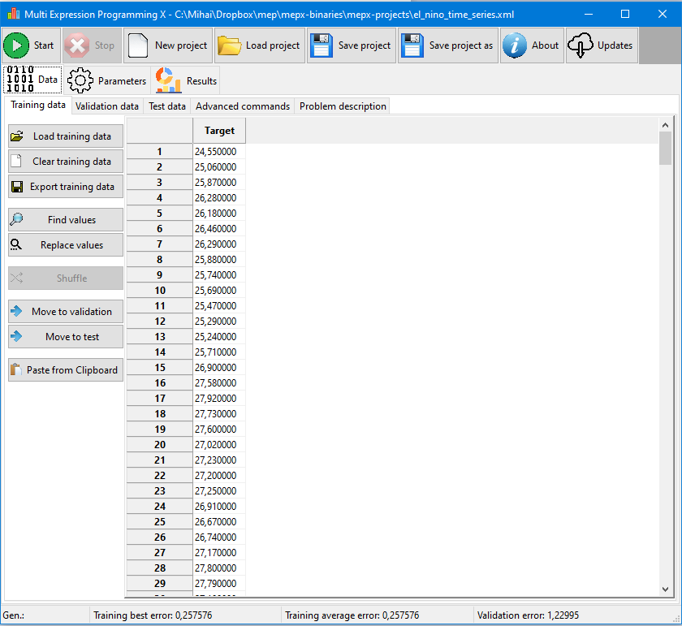
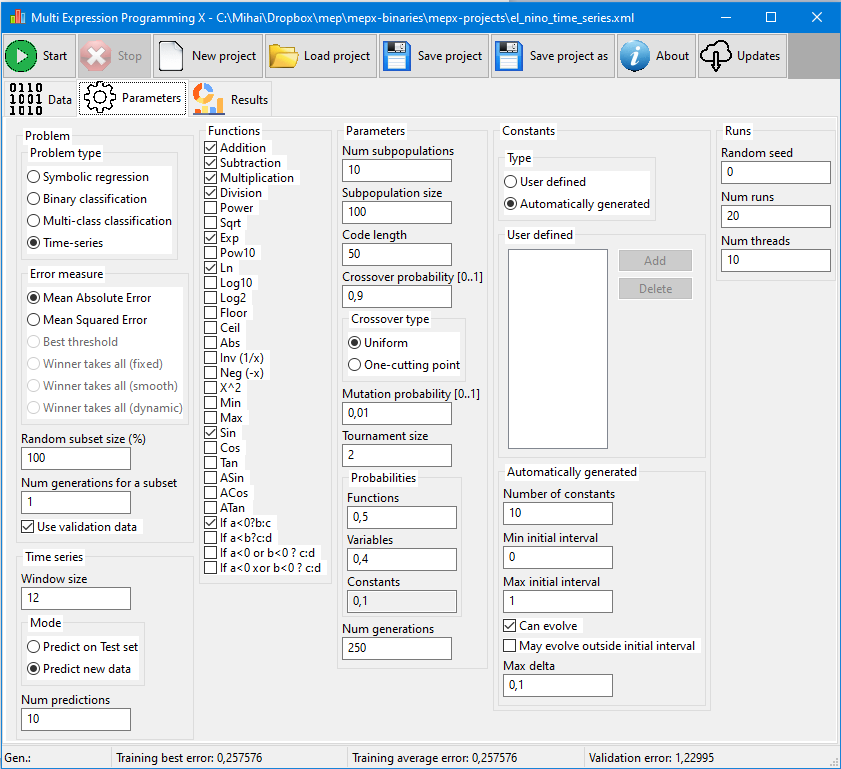
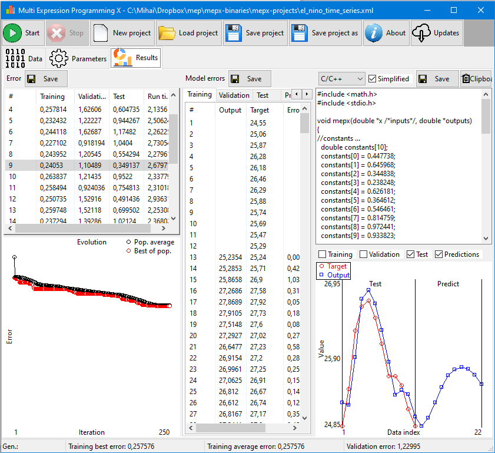
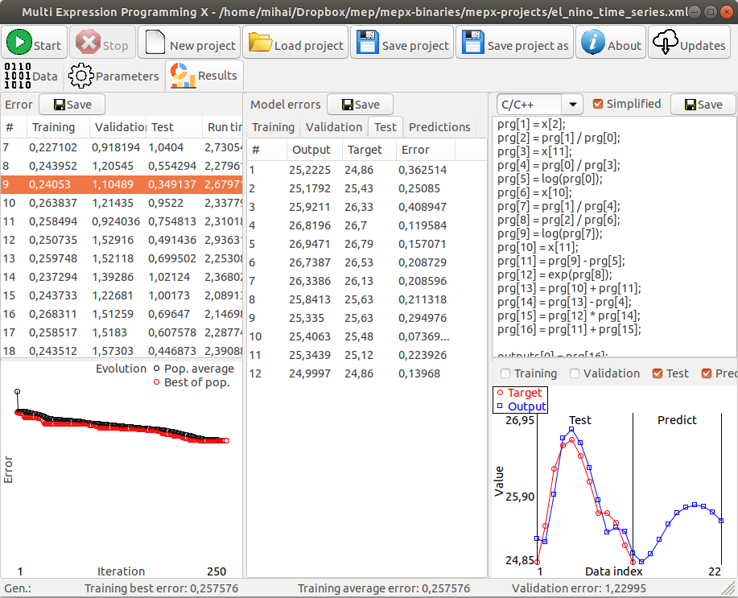

| Home |
| News |
| Description |
| Papers |
| Source code |
| MEPX Software |
| Videos |
| Screenshots |
| User manual |
| Links |
| Contact |
Data for symbolic regression problems
Settings for symbolic regression problems
Results for symbolic regression
Settings for binary classification problems
Results for binary classification
Settings for multiclass classification problems
Results for multiclass classification

Data for time series problems
Settings for time series problems
Results for time series
Linux (Ubuntu) screenshot
